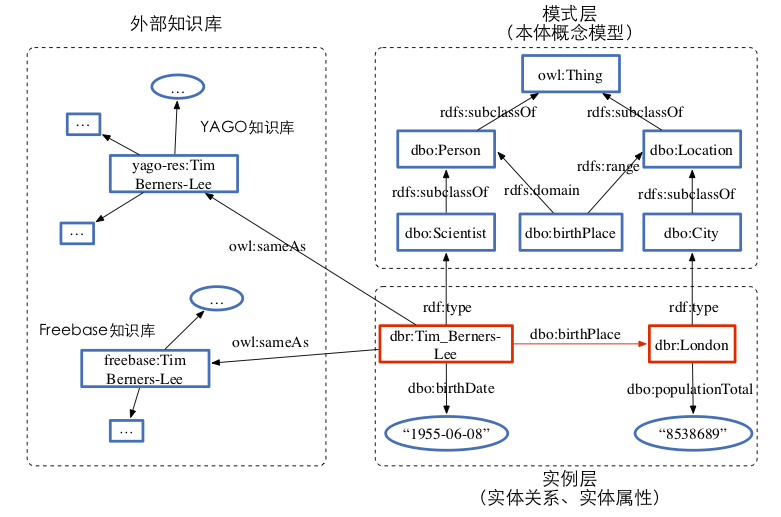

Research on Key Techniques for Knowledge Base Completion in Semantic Web
负责人：王志春，依托单位：北京师范大学
执行年限：2018.01-2018.12
语义Web是对现有Web的扩展，其目标是将网页互联的Web(Web of Documents)进化为数据互联的数据万维网(Web of Data)，为数据的共享和重用提供统一、开放的平台。随着语义Web技术的发展，特别是 W3C 链接开放数据项目(Linking Open Data，LOD)的不断推进，语义Web数据规模已经十分庞大。针对语义Web知识库存在的不完备问题，本项目研究知识库补全的关键技术。
与由实体及关系组成的知识图谱相比，语义Web知识库具有如下特点（如图1所示）: （1）模式层含有本体概念模型（2）实例层含有非关系型事实（3）与外部知识库互联。本项目针对语义 Web 知识库的上述特点，研究提出可以有效利用知识库本体、非关系型事实的知识库补全模型和方法。
图1. 语义Web知识库结构示例